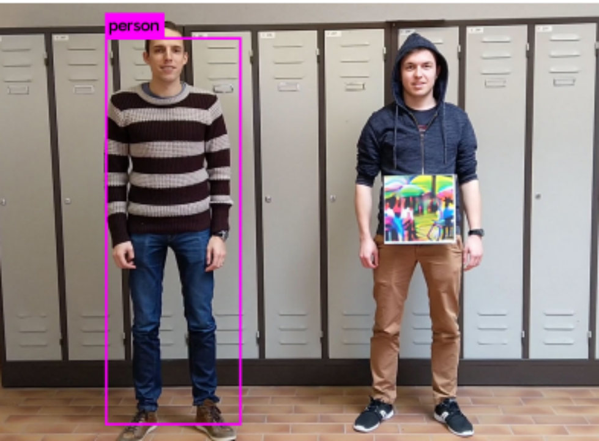
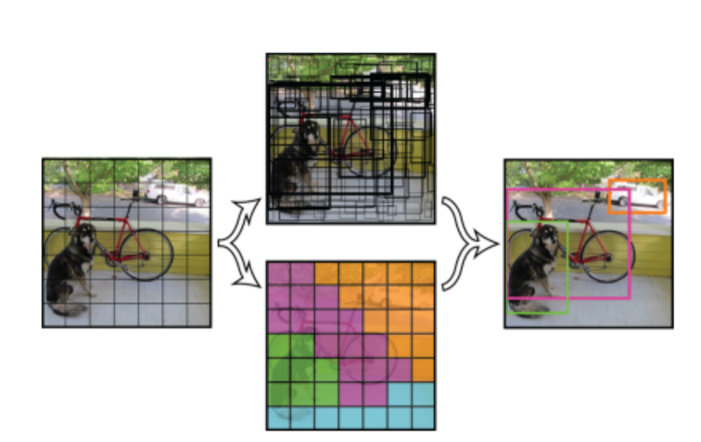
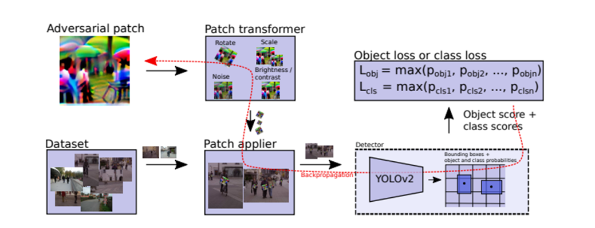

Adversarial Patch Attacks Against Person Detection
With the advancement of deep learning, adversarial attacks on neural networks have attracted growing attention. Surprisingly, small changes to a neural network's input can lead to drastically different outputs.
In the paper "Fooling Automated Surveillance Cameras: Adversarial Patches to Attack Person Detection", the authors successfully crafted adversarial patches that hide people from YOLO detectors—even in dynamic real-world environments.
Figure 1: Real-world adversarial patch test
YOLOv2 Object Detection
YOLOv2 divides an image into a grid and applies a convolutional neural network (CNN) to predict bounding boxes and class probabilities. Each anchor within the grid outputs an objectness score, bounding box coordinates, and class predictions. The final detections are determined based on objectness confidence and box overlap.
Figure 2: YOLOv2 grid-based object detection
Patch Optimization Strategy
The goal is to generate a printable adversarial patch that deceives YOLOv2 in real-world scenarios using the Inria dataset. The loss function combines:
- Non-printability score (NPS)
- Total variation loss (TV)
- Object/class confidence suppression loss
Three strategies for obj/class loss minimization:
- Minimize objectness only
- Minimize class=person confidence only
- Minimize both objectness and class=person simultaneously
The algorithm begins by randomly initializing a patch, applies transformations (rotation, noise, scaling), overlays it on images, and forwards them through YOLOv2. Based on the resulting scores and losses, the patch is iteratively optimized.
Figure 3: Adversarial patch training pipeline
Our Improvements
Building upon this work, we made two key improvements:
1. Stealthy Obfuscation
A near-black patch can successfully suppress person detection.
loss = det_loss + nps_loss + max(tv_loss, 0.1) + mean(adv_patch)

Figure 4: Near-black patch hiding a person
2. Misclassification
Instead of hiding people, we aim to misclassify them as unrelated objects such as a bear or an umbrella.
attack_class = normal_confs[:, 25, :] # class 25 → umbrella
return max(confs_for_class) - max(attack_class)

Figure 5: Misclassified as a bear

Figure 6: Misclassified as an umbrella